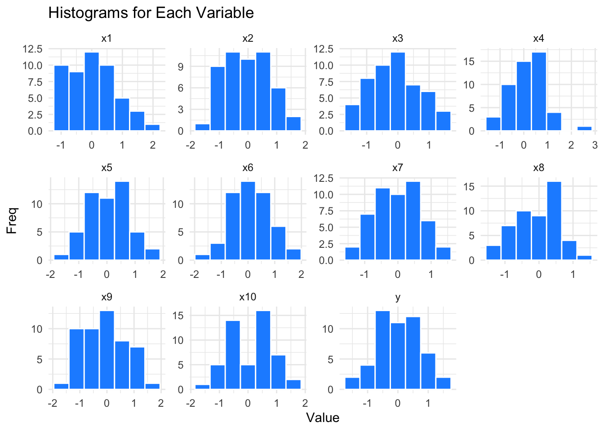

A First Look Analysis of 2023-2024 Well-Being Study Data from U.S. Antarctic Research Outpost 31
Maureen, MAUREEN! Get me a coffee will yah?
We’re rolling? Oh ahem…
My name is Ian Habit and I am the Lab Director for the U.S. Antarctic Research Program - Human Systems Division, preparing this video report for Assistant Chief of the Human Systems Division, Dr. McKnight.
I know your time is precious sir, so I will try to keep this briefing…brief.
As you know, 41 years ago, the scientists and operations staff of Research Outpost 31, save 2, were killed in a mysterious mass casualty event. Leading theories from other divisions include gas leaks and rancid MRE’s…but we at the Human Systems Division have a different theory: the lack of staff well-being and stress due to the harsh environment drove the occupants to murder each other in a mass hysteria cluster.
So, 41 years later, science must continue! We finally garnered the funding to record markers of well-being in extreme polar environments, and we expanded the study to 50 participants, 25 men and 25 women, housed once again at Research Outpost 31. Not sure who made the call on carrying it out in the same place, but at least the location will be replicated!
It was my idea? turns off camera well the next time I suggest something like that, warn me about it! You think it looks good we did the study in the same creepy ass outpost that was abandoned for 40 years? Jesus christ with how much I pay you all..
Anyway, we just received the data and I want to run through a live analysis so you can get an immediate first look to report up the chain. I expect the findings to be quite interesting. Thanks again to RJ MacReady, one of the 2 survivors of the original incident, for agreeing to serve as a our field data monitor.
Before we dive in, just a note: this is a small sample size, we may find that a lot of our descriptive values have very little deviation and point toward many of our variable being considered “normal”…but we have to be careful with these assumptions and actually visualize our data to confirm this suspicion.
Also, a lot of the variables we measured were of differing scales and self reported, things like happiness were 0 - 100, others were 1-5 ratings…we’ve rescaled the data in this collection sir so that we have a level playing field for analysis. Regardless, we’ll still z transform some of this data later when we start comparing them for relationship strength.
Let’s get to it:
Code
# Load Packages and Datasetlibrary(psych)library(tidyverse)
── Attaching core tidyverse packages ──────────────────────── tidyverse 2.0.0 ──
✔ dplyr 1.1.4 ✔ readr 2.1.5
✔ forcats 1.0.0 ✔ stringr 1.5.1
✔ ggplot2 3.5.0 ✔ tibble 3.2.1
✔ lubridate 1.9.3 ✔ tidyr 1.3.1
✔ purrr 1.0.2
── Conflicts ────────────────────────────────────────── tidyverse_conflicts() ──
✖ ggplot2::%+%() masks psych::%+%()
✖ ggplot2::alpha() masks psych::alpha()
✖ dplyr::filter() masks stats::filter()
✖ dplyr::lag() masks stats::lag()
ℹ Use the conflicted package (<http://conflicted.r-lib.org/>) to force all conflicts to become errors
Code
library(kableExtra)
Attaching package: 'kableExtra'
The following object is masked from 'package:dplyr':
group_rows
Code
library(ggridges)library(reshape2)
Attaching package: 'reshape2'
The following object is masked from 'package:tidyr':
smiths
Code
df <-read.csv("mod1.csv")
Observing the whole data set
vars
n
mean
sd
median
trimmed
mad
min
max
range
skew
kurtosis
se
x1
1
50
0.0181080
0.7695948
-0.1175425
-0.0385125
0.8966687
-1.038504
1.934563
2.973067
0.5082616
-0.6441462
0.1088371
x2
2
50
-0.0266266
0.7772361
-0.1097358
-0.0527651
0.8519142
-1.385028
1.788916
3.173945
0.2062904
-0.8077550
0.1099178
x3
3
50
-0.0778442
0.7697878
0.0267834
-0.0917865
0.9536180
-1.430250
1.486698
2.916948
0.1470770
-0.9482259
0.1088644
x4
4
50
0.1126985
0.7531142
0.2082776
0.1115210
0.5747207
-1.526286
2.302391
3.828677
0.0752375
0.3711921
0.1065064
x5
5
50
0.0428410
0.7391254
0.0287931
0.0523095
0.8074606
-1.708452
1.525088
3.233540
-0.0970308
-0.6050263
0.1045281
x6
6
50
0.0883565
0.7290995
0.0657845
0.0627313
0.7918899
-1.482324
1.929189
3.411514
0.2480144
-0.4273610
0.1031102
x7
7
50
0.0051591
0.6827241
-0.0320769
-0.0079656
0.7399854
-1.178929
1.562697
2.741626
0.1778498
-0.8244356
0.0965518
x8
8
50
-0.0355454
0.6456919
0.0901859
-0.0086301
0.7667231
-1.435320
1.241873
2.677193
-0.2829005
-0.9115552
0.0913146
x9
9
50
-0.0685567
0.8152215
-0.0379734
-0.1065734
0.9954745
-1.556594
1.805193
3.361788
0.3186261
-0.8222238
0.1152897
x10
10
50
0.0730629
0.7774751
0.2515162
0.0903750
1.0427794
-1.808745
1.375211
3.183956
-0.2367742
-1.0518567
0.1099516
y
11
50
0.0155731
0.6931878
0.1166201
0.0133267
0.8215418
-1.586415
1.419483
3.005897
-0.0415111
-0.6472254
0.0980316
Code
# Melt the data to long formatdf_long <-melt(df)
Using sex as id variables
Code
# Plot histograms using ggplot and facet_wrap# Used Sturges' Rule k=⌈log2(n)+1⌉ to calculate binsggplot(df_long, aes(x = value)) +geom_histogram(bins =7, fill ="dodgerblue", color ="white") +facet_wrap(~ variable, scales ="free") +# Create one histogram for each variablelabs(title ="Histograms for Each Variable",x ="Value", y ="Freq") +theme_minimal()

X4 and X1 are looking interesting…X4 appears to have an outlier (remember what I said about the small sample size?) so we’ll have to zoom in there to see what’s going on. And X1, looks like a positive skew…wonder how strongly that’s actually going to relate to Y. Let’s focus on those two for now.
Looking at x4 more closely, I would call that value way out to the right is (what is the SD here?) Need to graph the mean and variance
Let’s go deeper on x4 specifically, and separate out by sex. Looks like the potential outlier exists in the sample of females, but otherwise if that was excluded, the females have a distribution that is closer to normal, albeit narrower, meaning the variance is (higher, lower?). Males are somewhat more normal.
Code
ggplot(df, aes(x = x4)) +geom_histogram(binwidth =0.5, fill ="dodgerblue", color ="white", aes(y = ..density..)) +geom_density(alpha =0.2, fill ="red", color="white") +facet_wrap(~ sex) +# Facet the plot by the sex variabletheme_minimal() +labs(title ="Histogram and Density of x4 Faceted by Sex", x ="x4", y ="Density")